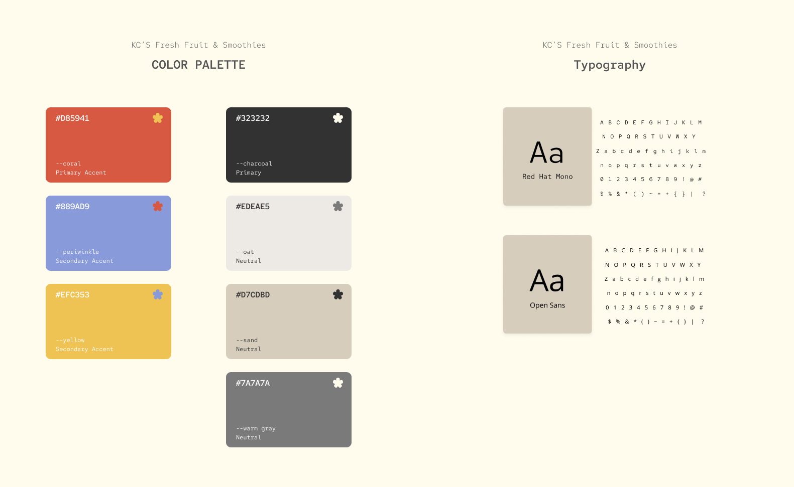

Designing and coding a mobile ordering experience for a beloved Drexel-area food truck.
KC's Fresh Fruit & Smoothies is a loved food truck located at 33rd St. & Lancaster Walk, serving the Drexel community. Despite a loyal following, KC's had no digital ordering presence and customers relied entirely on in-person interactions.
As an extension from IDM215, 4Corners took the designed Figma prototype from the previous quarter and revamped the interface design, conducted two rounds of user testing, and ultimately built a functional web app.
My role as the secondary project manager and designer consisted of leading the visual redesign of the interface and coding the beta prototype in HTML and CSS.
4Corners is a four-person team brought together for IDM215 and IDM216 at Drexel University. Each member held distinct primary and secondary roles, ensuring coverage across project management, design, development, and data architecture.
KC's Smoothie operates as a food truck with no app, no website, and no way for customers to place orders in advance. During peak hour lines grow long and potential customers walk away rather than wait.
This project is the second phase of a two-course sequence. IDM215 produced a Figma prototype and IDM216 extended that work into a tested, coded, and deployed web app.
KC's had zero digital infrastructure. No menu online, no ordering system, no way to reduce wait times or reach customers outside of the physical truck location.
Design and build a usable, accessible mobile ordering interface. Validate the design through two rounds of testing. Deliver a coded product.
Anyone in the KC's community, Drexel students, local residents, faculty and staff, and nearby workers such as construction workers around the area.
We identified four primary groups whose needs shaped the design. From quick orders for students between classes, to a familiar and navigable interface for regulars.
Our process followed an iterative design and test cycle. Below is a walkthrough of each phase, with notes on my specific contributions at each stage.
The team identified three core personas that reflect the real makeup of KC's customer base.These personas grounded every design decision, from navigation structure to the copy on the menu screens.
Click any image to expand ↗
Journey maps exposed pain points at each stage that included unclear wait times, too many customization options, and limited payment methods. These pain points directly became design opportunities in the interface.
Click any image to expand ↗
The previous course produced an initial Figma prototype. At the start of IDM216, the team evaluated that design and identified opportunities for improvement, a cleaner visual hierarchy, stronger brand identity, and a more intuitive ordering flow. I took the lead on redesigning the interface in Figma before any code was written, establishing a refreshed visual language that carried through to the final coded product.
The style guide consists of a coral inspired color palette, neutral sand and oat tones, and a pairing of Red Hat Mono with Open Sans. It was the shared reference point that kept the coded prototype visually consistent with the Figma designs throughout development.

Click to expand ↗
Before writing a single line of code, we conducted alpha testing on the Figma prototype with real users. Participants were walked through key flows, browsing the menu, customizing a smoothie, and checking out. We gathered feedback on clarity, navigation logic, and visual appeal. Findings from this round directly shaped changes made before development began.
I was the primary designer responsible for translating the Figma designs into a working HTML/CSS version.
Once the coded prototype was stable, we ran a second round of usability testing on the HTML/CSS version. Findings were used to refine the final version before deployment.
Coded with HTML, CSS, and Javascript
The final product is a fully coded, deployed web application that gives KC's customers a way to browse the menu, customize their order, and manage their bag. The interface was designed to feel approachable and quick for users on the go, with a clear visual hierarchy that makes scanning the menu and placing an order effortless.
The final product is deployed and accessible at the link below.
The landing screen greets the user by name and presents featured items including the "Most Popular" Custom Smoothie and a "Campus Pick," making it easy to discover new items while keeping regulars in their groove.
Users can fully customize smoothies and fruit cups, mirroring the real KC's experience of telling the vendor exactly what you want. This was a key UX priority identified in the user journey mapping phase.
Overall, the project delivered on it's objectives of taking KC's from having no digital presence to a fully coded and deployed, user-tested application. Two rounds of usability testing with real users validated the design direction and informed meaningful iterations at each stage.
Running alpha testing on the Figma prototype and beta testing on the coded build gave us two rounds of valuable feedback. Issues caught at the prototype stage were resolved before a single line of code was written, enhancing user experience.
One of the biggest challenges was integrating the back-end php work with the front-end code. Collaborating with coders and hosting several meetings aided in smoothing the implementation process to deliver our final product that reflected the design intent form previous iterations.
If i were to approach this project again, I would invest more time in establishing further enhancing the design of the app. I would take into considerations all the design feedback received from both testing iterations. With the timeline and turnover of this project, I wasn't able to change as much as I had hoped to create the most ideal version of this app.